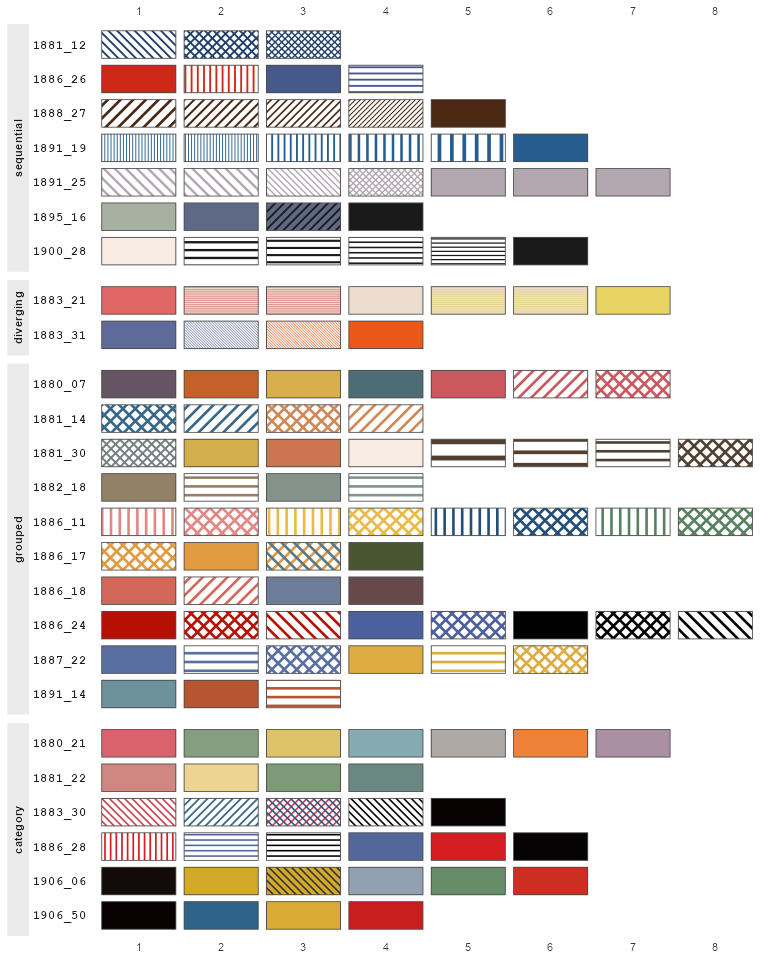

Each element of each palette in cheysson_patterns is registered with
'gridpattern' as a pattern of its own, a swatch, which draws its paper
or fill color, hatch type, line colors and angle together. A swatch is
named "<palette>-<element>", e.g. "1886_28-1", and is used through the
ordinary pattern aesthetic of 'ggpattern', with no other pattern
aesthetics or geom arguments needed:
Details
ggplot(df, aes(x, y, pattern = group)) +
geom_col_pattern() +
scale_pattern_manual(values = paste0("1886_28-", 1:6))All the swatches are shown below, one row per palette, so the swatch in row
1886_24, column 2 is "1886_24-2". Draw this atlas, or the part of it for
chosen palettes or palette types, with show_swatches().

Other pattern aesthetics such as pattern_fill or pattern_angle are
ignored by a swatch, apart from pattern_spacing, pattern_density and
(see below) pattern_units.
The swatches are registered when 'gridpattern' is loaded (it is in
Suggests, so ggCheysson doesn't load it), using
gridpattern::register_pattern() when available (gridpattern >= 1.5.0),
else the ggpattern_geometry_funcs option.
Spacing and density
The swatches of a palette keep the relative line spacings Cheysson used,
e.g. the hatching of sequential palette "1888_27" gets denser at each
step. Each swatch's spacing is a base spacing, by default 0.025, times its
spacing relative to the palette's typical (median) hatched swatch, as
measured on the plates (limited to between half and twice the base, since
some measurements are unreliable). All swatches draw their lines with a
density of 0.3.
pattern_spacing sets the base spacing, so the palette keeps its
proportions, and pattern_density sets the density. What setting them
means depends on the installed version of 'ggpattern':
ggpattern >= 1.4.0: they replace the default base spacing and density, in
pattern_units.Earlier versions (which always supply their own defaults of 0.05 and 0.2): they adjust the defaults relative to those values, e.g.
pattern_spacing = 0.1doubles the spacing.
Either way, with pattern_units other than "snpc" (e.g. "cm"), the
default base spacing is 0.3 cm, converted to those units.
Set them only when needed, since code that sets them may draw differently when 'ggpattern' is updated.